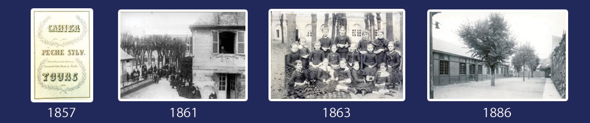

Au Sommaire :
> Portes Ouvertes sur RDV les 24 juin, 1, 3 et 4 juillet
> Report versement Taxe d'apprentissage
> Un nouveau nom pour la BAC Pro Gestion-Administration
> Des mesures exceptionnelles pour l'apprentissage
> Un peu d'histoire...
On est prêt à vous accueillir !
Depuis la mi-mars, notre pays a traversé une crise qui nous l'espérons tous est derrière nous et nous espérons pouvoir regarder à nouveau l'avenir avec sérénité.
Dans la précédente lettre envoyée pendant la période de confinement et sur les réseaux sociaux, nous vous avons décrit les différentes mesures mises en place au sein de nos différents établissements pour assurer, dans la mesure du possible, une continuité de formation de qualité.
Aujourd'hui, tout comme vous, nous avons les yeux tournés vers l'avenir et c'est dans cet esprit que nous organisons des Portes Ouvertes sur rendez-vous pour garantir à tous les mesures de distanciation sociale.
Comme vous pourrez le découvrir dans cette Info'News, pendant 4 jours, on fait tout pour vous accueillir !
Se tourner vers l'avenir, c'est également accompagner les jeunes qui vont choisir la filière en alternance et comme vous pourrez le lire, nous avons déjà commencé à mettre en place des actions pour les accompagner dans la recherche de l'entreprise pour leur formation théorique. C'est également la création d'un nouveau BTS en Alternance pour la prochaine rentrée, le BTS Audiovisuel avec un diplôme reconnu par l'Etat, qui n'existe pas en Région Centre...
Comme vous le voyez, nous sommes déjà tournés vers la rentrée, mais toutes ces actions ne seraient pas possibles si nous n'avions pas le soutien de nombreux dirigeants ou décideurs qui nous font confiance en nous versant la part libre de la Taxe d'Apprentissage. Et si, compte tenu des circonstances exceptionnelles et des nouvelles modalités de versement de cette année, vous n'avez toujours pas fait le nécessaire, je vous invite à œuvrer dans ce sens rapidement puisque la date limite de versement est le 1er juillet et à lire l'article ci-dessous pour connaître les modalités de versement.
J'espère sincèrement vous rencontrer à l'occasion de nos Portes Ouvertes.
Bonne lecture à toutes et à tous.
Au plaisir d'échanger, n'hésitez pas à nous faire part de vos remarques, avis ou suggestions..., elles nous sont toujours précieuses pour progresser.
Benoît VISSE
Directeur Coordinateur de l'Institution Notre-Dame La Riche
On fait tout pour vous accueillir
de 16h à 19h les mercredis 24 juin, 1er juillet, le vendredi 3 juillet
et le samedi 4 juillet de 9h30 à 13h
Nos précédentes Portes Ouvertes prévues initialement à fin mars ont dû être annulées du fait de la crise sanitaire qui a traversé notre pays. Nous vous avions promis de les reporter dès que la situation s'améliorait. C'est fait puisque nous avons programmé 4 jours pour pouvoir vous accueillir.
Pour que votre visite s'organise dans de bonnes conditions, nous vous remercions de prendre rendez-vous dès aujourd'hui pour la date souhaitée au 02 47 36 32 00. Ainsi nous pourrons garantir à tous les visiteurs une bonne distanciation sociale.
Tous les établissements pourront vous accueillir, L'Ecole Maternelle et Elémentaire, le Collège, Les Lycées, l'Enseignement supérieur, le Centre de Formation ISCB et le Centre de Langues Tours'N'Langues. L'internat, fermé depuis le 16 mars, sera ouvert aux visites.
Venir nous rencontrer, c'est découvrir le panel de formations que nous proposons afin que chaque élève, collégien, lycéen ou étudiant puisse développer son talent tout en prenant en compte le rythme de chacun.
Par exemple, les différentes formations dispensées dans les lycées qui conviennent à tous les jeunes.
Ceux qui veulent rapidement s'insérer dans le marché du travail pourront choisir la filière “Pro” dans des secteurs qui recrutent : commerce, restauration, cuisine, gestion administration, accueil, systèmes numériques, vente. Si le lycéen change d'avis en fin de formation et qu'il préfère continuer dans l'enseignement supérieur au lieu de commencer à travailler directement, cela restera toujours possible.
Pour les futurs lycéens qui ambitionnent déjà de faire des études dans le supérieur, ils pourront opter pour un BAC Général ou un BAC Technologique. Le Lycée Général Notre-Dame La Riche permet un grand choix de spécialisations (9 en tout !) à découvrir sur notredamelariche.fr ou à l'occasion de nos Portes Ouvertes.
Pour ceux qui préfèrent une filière technologique, 3 formations sont proposées au Lycée Technologique Notre-Dame La Riche : STMG | Sciences et Technologies du Management et de la Gestion • STI2D | Sciences et Technologies Industrielles et du Développement Durable • STHR | Sciences et Technologies de l'Hôtellerie et de la restauration.
Ensuite, Notre-Dame La Riche, c'est également des BTS en formation initiale, avec des diplômes reconnus par l'Etat pour des filières à fort potentiel. Et un Centre de Formation ISCB qui permettra à nos jeunes d'être apprenti pendant les 2 ans de formation en alternant formation théorique et formation pratique chez un employeur. 9 filières d'avenir sont proposées : Audiovisuel, Assurance, Communication, Gestion de la PME, Management, Hôtellerie, Restauration, Relation Client, Informatique, Tourisme.
Autant de bonnes raisons pour ne pas manquer ces Portes Ouvertes qui auront lieu au cœur du Quartier des Halles à Tours de 16h à 19h les mercredis 24 juin et 1er juillet, le vendredi 3 juillet et de 9h30 à 13h le samedi 4 juillet. Comme on vous attend nombreux, pour respecter les conditions sanitaires, merci de prendre rendez-vous au 02 47 36 32 00. Plus plus de détails..., 1 adresse : notredamelariche.fr
TAXE D'APPENTISSAGE
Dernier délai le 1er juillet pour la verser
Dans notre précédente newsletter, nous vous rappelions les nouvelles modalités de versement de la Taxe d'Apprentissage pour 2020 et particulièrement les 13% destinés aux établissements habilités à la recevoir comme le Lycée Professionnel et le Lycée Technologique de Notre-Dame La Riche. (En 2019, la taxe d'apprentissage était versée en totalité à votre OPCA fin février et la part libre était reversée par votre OPCA en fonction de vos souhaits)
Pour mémoire, la taxe d'apprentissage correspond pour 2020 à 0,68% de la masse salariale 2019 de votre entreprise. 13% de cette somme sont destinés aux lycées technologiques ou professionnels. Cette année, c'est à vous de choisir à qui vous souhaitez donner cette somme et contrairement aux années précédentes, ces 13% ne passent plus par les OPCO (anciennement les OPCA). Faute de versement avant le 1er juillet DIRECTEMENT auprès d'un établissement habilité, cette somme sera toujours à payer puisque la Taxe d'Apprentissage est un impôt et donc sera appelée par l'Etat.
La crise sanitaire a modifié les dates de versement entraînant une certaine confusion dans les esprits et compte tenu des circonstances, l'Etat dans un décret à paraître laisse jusqu'au 1er juillet aux entreprises pour payer cette part libre de la Taxe d'Apprentissage.
Si vous ne l'avez pas encore versé, rendez-vous sur la page “Spéciale Taxe d'Apprentissage” de notredamelariche.fr, vous pourrez facilement remplir un formulaire directement en ligne ou télécharger un bordereau pour la verser au lycée Professionnel ou au lycée Technologique de Notre-Dame La Riche.
Le montant de la taxe d'apprentissage est important pour notre institution, il nous permet chaque année d'investir dans de nouvelles formations et nouveaux matériels pour mieux former les lycéens en fonction de nouvelles filières d'avenir.
En résumé, si vous êtes chef d'entreprise ou décideur, une visite s'impose dès aujourd'hui sur notredamelariche.fr/TA
Un nouveau nom pour le BAC Pro Gestion-Administration
Le BAC Professionnel “Gestion Administration” vient à nouveau de changer de nom. Cette filière très appréciée par les entreprises forme des gestionnaires administratifs chargés d’assurer les activités de gestion, de commercialisation, de communication ainsi que le suivi des projets d’une entreprise. Le titulaire du diplôme facilite les relations externes de l’organisation, prend en charge la gestion du personnel et améliore la productivité administrative.
La formation se déroule en 3 ans avec 22 semaines de stage sur les 3 années de formation.
Le titulaire du Bac pro Gestion-Administration travaille au sein d’une PME/PMI, d'une administration, d'une association ou d'une collectivité territoriale. Il prendra en charge l’ensemble des activités en rapport avec la gestion administrative.
Le Bac pro mène directement à la vie active pour les métiers suivants : Secrétaire, Assistant de gestion PME, Assistant en ressources humaines, Agent comptable financier...
A l'issue du BAC Pro, pour ceux qui le souhaitent, la poursuite d'étude est possible dans des BTS comme par exemple Gestion de la PME.
A compter de la prochaine rentrée, ce Bac PRO s'appellera “Assistance à la Gestion des Organisations et de leurs Activités - AGOrA”, peu de changements interviennent dans le programme de la formation. Profitez de nos Portes Ouvertes, les 24 juin, 1er, 3 et 4 juillet pour venir le découvrir.
Des mesures exceptionnelles en faveur de l'apprentissage
Avec la crise sanitaire et l'impact et les conséquences qu'elle a entraînées sur de nombreuses entreprises qui sont loin d'avoir retrouver une activité normale, le gouvernement a décidé d'un plan de relance pour l'apprentissage.
Ce plan apporte des mesures concrètes aussi bien pour les entreprises que pour les alternants de la prochaine rentrée :
Pour les futurs apprentis :
• Pour les jeunes entrant en formation entre le 1er août et le 31 décembre 2020, un délai de 6 mois leur est accordé pour trouver une entreprise avec laquelle signer un contrat d’apprentissage.
• Ils peuvent ainsi rester en centre de formation ISCB, sans contrat, pendant 6 mois (contre 3 mois avant).
Pour les entreprises :
• Aide financière de 5 000 €uros pour un apprenti de moins de 18 ans, 8 000 €uros pour un apprenti majeur préparant un BTS en alternance.
• Cette aide sera versée sans condition pour les entreprises de moins de 250 salariés.
• Pour les autres, les plus de 250 salariés, elles doivent s'engager à atteindre le seuil – déjà fixé par la loi – de 5% de salariés en contrats favorisant l’insertion professionnelle et l’alternance en 2021.
Afin de faciliter les démarches et la mise en relation entre les futurs alternants et les entreprises, Notre-Dame La Riche et son Centre de Formation, l'ISCB, ont déjà mis en place, en plus des actions habituelles, un formulaire sur son site web permettant facilement aux entreprises d'exprimer leur souhait d'apprenti pour la Rentrée 2020. 👉 notredamelariche.fr/stages. Un premier e-mailing pour annoncer ce service a déjà été fait auprès de nombreuses entreprises fin mai, certaines ont déjà commencé à exprimer leur souhait.
De nouvelles actions de communications seront mises en place à la rentrée 2020 pour accompagner les apprentis inscrits au Centre de Formation ISCB à trouver une entreprise.
Pour plus de détails sur les 9 BTS en alternance proposés par le Centre de Formation ISCB : 👉 iscb.fr .
Rendez-vous sur le site du ministère du travail, travail-emploi.fr, pour plus de détails sur ce plan de relance gouvernemental.
L'histoire de l'institution Notre-Dame La Riche de 1823 à 1886

Au fil de nos “Info'News”, nous vous faisons vivre l'histoire riche de l'Institution Notre-Dame La Riche. Troisième épisode !
1823 : Pendant tout le XIXème siècle, les Tourangeaux désignent la congrégation des Religieuses des Sacrés Cœurs de Jésus et de Marie sous le nom de "Dames du Saint-Esprit" (du nom de la Maison qu’elles habitent). L’école porte le même nom. Le Pensionnat du Saint-Esprit est réservé aux filles des familles aisées tandis qu'un externat ou école gratuite accueille les jeunes filles pauvres du quartier. En 1823, l’école accueille cent soixante élèves. Comme celle des Frères, elle associe l’éducation religieuse à l’enseignement élémentaire et pratique.
1857 : Cette année-là, l'école Notre-Dame La Riche devient une école communale.
(photo : Cahier de Sylvain Pêche)
1861 : Elle le restera jusqu’en 1891; l’école, qu’on tente de laïciser à la suite de la loi du 30 octobre 1886 interdisant aux personnels congréganistes d’enseigner, reçoit alors trois cents élèves répartis en six classes seulement !
Le Pensionnat du Saint-Esprit accueille aussi plus de trois cents élèves. La réputation s’étend loin dans la région : en 1861 la préfecture de l’Indre-et-Loire fait l’éloge de la Congrégation du Saint-Esprit en ces termes : "excellent esprit, exclusivement vouée à l’instruction des jeunes filles : elle comprend un assez grand nombre d’élèves qui reçoivent toutes les meilleurs soins.
Ces Dames tiennent aussi une école gratuite pour les jeunes filles pauvres. La Communauté a de l’influence et beaucoup de considération"...
(photo : Pensionnat du St Esprit)
1863 : Un groupe de Sœurs se sépare de la Communauté pour se rattacher à la Congrégation des Sœurs de Bourgueil. Ces religieuses fondent une école rue Racine. En 1890, les "Dames du Saint-Esprit" fondent l’école Sainte-Geneviève à Luynes. C’est la troisième fondation à l’extérieur de Tours après Montrichard et Pont-de-Bièvre.
(photo : Classe du Pensionnat du Saint Esprit)
1886 : Craignant la laïcisation et une spoliation des locaux qui auraient privé la paroisse de son école, le curé fait construire six classes sur le terrain du Patronage des filles de Sainte-Agnès pour accueillir son école de garçons. Le début de l'Ecole Saint Agnès.
(photo : Bâtiments de l'Ecole Sainte-Agnès)
Ne manquez pas notre prochaine newsletter, vous y retrouverez l'histoire de l'institution de Notre-Dame la Riche à partir de 1887.
Pour voir notre premier épisode (1776 - 1815), rendez-vous sur notre première Info'News de mars
et de 1816 à 1821, rendez-vous sur notre précédent numéro
Une remarque, une question ou pour nous contacter :
Institution Notre-Dame La Riche | 26 rue de la Bourde, 37000 TOURS
Tél. 02 47 36 32 00
| ndlr@ndlr.fr
| www.notredamelariche.fr
Suivez nos actualités sur :


|